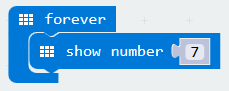
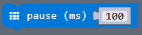

Micro:bit PXT - Beginner
Lesson 02 - Lucky 7
Intro
In this lesson, you will learn how to make the micro:bit display an integer on the LED screen. You will create the project shown in the video below.
Code It
- You already know how to use the PXT editor, so create a new project, and drag in the blocks needed to make your code like the example below. All blocks needed for this lesson are in the 'Basic' tab. 
Learn It
- This is a very simple program, however, it does bring up one key programming concept.
- The
show numberblock is a command. 7is an argument to the command. It tells the command which number to display.
Save It
- Download your code into the directory setup in the previous lesson, and call the file:
microbit-lesson02a.hex
Test It
- Flash the code file onto the micro:bit.
- The micro:bit should behave as shown in the first video.
- Did your code work? If so, well done! If not, look through the code to find any mistakes. You can find a code listing above.
- Now move on to the challenges...
Challenges
- Challenge 1:
- The micro:bit should show
7,14and all of the other multiples of 7 up to35in sequence, one after another. There should be a gap of 1 second between each number. - In order do this, you will need to use the
pauseblock, which can be found in the Basic tab. - The
pauseblock looks like this:

- The
pauseblock measures time in milliseconds (ms). 1 second = 1000 milliseconds. - The time in milliseconds to pause is an argument to the
pauseblock. - Save your code with the following filename:
microbit-lesson02b.hex
Finish
Congratulations! You have now completed lesson 2. Go back to the Beginner index, and move on to the next lesson.